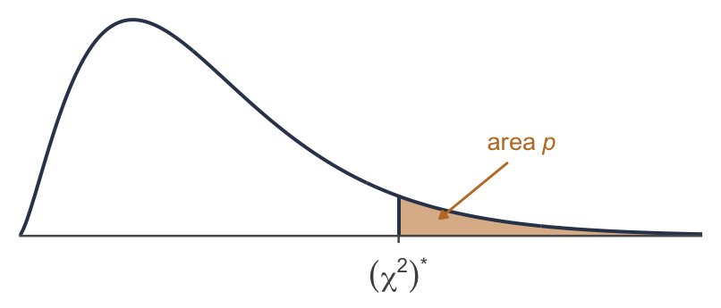
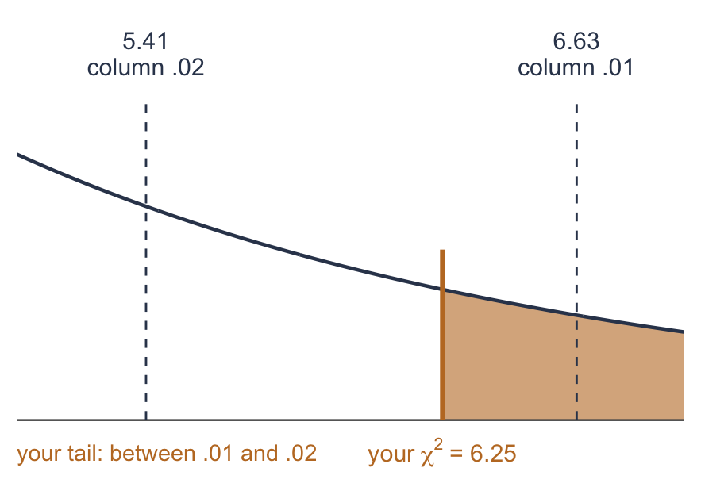

Table F · the χ²-distribution
critical values for a contingency table
The table gives the critical value (χ²)*, the boundary you compare χ² with: to its right lies probability p.
χ² has only one tail, on the right. Only a big χ² is suspicious, because then your contingency table is far from “independent” (week 4). So your whole α goes into that one tail, and the column is simply your α. No dividing by two, as with table D.
The critical value
For a two-by-two table, df = (2 − 1) × (2 − 1) = 1. Row 1, column .05: 3.84. That is the boundary from week 4: if your χ² is on it or above it, you reject the null hypothesis that the two variables are independent.
Bracketing a p
The table doesn’t give a p for every χ². But you can bracket the p between two columns.
In week 4, the phone in the bedroom gave χ² = 6.25, with df = 1. In row 1, 6.25 lies between 5.41 (column .02) and 6.63 (column .01). Then just turn the order round: a bigger χ² goes with a smaller p. So
No times two: χ² has only one tail. Figure 1 shows it: your tail, to the right of 6.25, is smaller than the one to the right of 5.41 and bigger than the one to the right of 6.63. R gave p = .012, and that lies between them.

If your χ² lies beyond the last number in the row, p is even smaller than .0005. And if your df isn’t in the table, take the next smaller one that is, just as with table D.
The table

| probability p in the right tail | ||||||||||||
|---|---|---|---|---|---|---|---|---|---|---|---|---|
| df | .25 | .20 | .15 | .10 | .05 | .025 | .02 | .01 | .005 | .0025 | .001 | .0005 |
| 1 | 1.32 | 1.64 | 2.07 | 2.71 | 3.84 | 5.02 | 5.41 | 6.63 | 7.88 | 9.14 | 10.83 | 12.12 |
| 2 | 2.77 | 3.22 | 3.79 | 4.61 | 5.99 | 7.38 | 7.82 | 9.21 | 10.60 | 11.98 | 13.82 | 15.20 |
| 3 | 4.11 | 4.64 | 5.32 | 6.25 | 7.81 | 9.35 | 9.84 | 11.34 | 12.84 | 14.32 | 16.27 | 17.73 |
| 4 | 5.39 | 5.99 | 6.74 | 7.78 | 9.49 | 11.14 | 11.67 | 13.28 | 14.86 | 16.42 | 18.47 | 20.00 |
| 5 | 6.63 | 7.29 | 8.12 | 9.24 | 11.07 | 12.83 | 13.39 | 15.09 | 16.75 | 18.39 | 20.52 | 22.11 |
| 6 | 7.84 | 8.56 | 9.45 | 10.64 | 12.59 | 14.45 | 15.03 | 16.81 | 18.55 | 20.25 | 22.46 | 24.10 |
| 7 | 9.04 | 9.80 | 10.75 | 12.02 | 14.07 | 16.01 | 16.62 | 18.48 | 20.28 | 22.04 | 24.32 | 26.02 |
| 8 | 10.22 | 11.03 | 12.03 | 13.36 | 15.51 | 17.53 | 18.17 | 20.09 | 21.95 | 23.77 | 26.12 | 27.87 |
| 9 | 11.39 | 12.24 | 13.29 | 14.68 | 16.92 | 19.02 | 19.68 | 21.67 | 23.59 | 25.46 | 27.88 | 29.67 |
| 10 | 12.55 | 13.44 | 14.53 | 15.99 | 18.31 | 20.48 | 21.16 | 23.21 | 25.19 | 27.11 | 29.59 | 31.42 |
| 11 | 13.70 | 14.63 | 15.77 | 17.28 | 19.68 | 21.92 | 22.62 | 24.72 | 26.76 | 28.73 | 31.26 | 33.14 |
| 12 | 14.85 | 15.81 | 16.99 | 18.55 | 21.03 | 23.34 | 24.05 | 26.22 | 28.30 | 30.32 | 32.91 | 34.82 |
| 13 | 15.98 | 16.98 | 18.20 | 19.81 | 22.36 | 24.74 | 25.47 | 27.69 | 29.82 | 31.88 | 34.53 | 36.48 |
| 14 | 17.12 | 18.15 | 19.41 | 21.06 | 23.68 | 26.12 | 26.87 | 29.14 | 31.32 | 33.43 | 36.12 | 38.11 |
| 15 | 18.25 | 19.31 | 20.60 | 22.31 | 25.00 | 27.49 | 28.26 | 30.58 | 32.80 | 34.95 | 37.70 | 39.72 |
| 16 | 19.37 | 20.47 | 21.79 | 23.54 | 26.30 | 28.85 | 29.63 | 32.00 | 34.27 | 36.46 | 39.25 | 41.31 |
| 17 | 20.49 | 21.61 | 22.98 | 24.77 | 27.59 | 30.19 | 31.00 | 33.41 | 35.72 | 37.95 | 40.79 | 42.88 |
| 18 | 21.60 | 22.76 | 24.16 | 25.99 | 28.87 | 31.53 | 32.35 | 34.81 | 37.16 | 39.42 | 42.31 | 44.43 |
| 19 | 22.72 | 23.90 | 25.33 | 27.20 | 30.14 | 32.85 | 33.69 | 36.19 | 38.58 | 40.88 | 43.82 | 45.97 |
| 20 | 23.83 | 25.04 | 26.50 | 28.41 | 31.41 | 34.17 | 35.02 | 37.57 | 40.00 | 42.34 | 45.31 | 47.50 |
| 21 | 24.93 | 26.17 | 27.66 | 29.62 | 32.67 | 35.48 | 36.34 | 38.93 | 41.40 | 43.78 | 46.80 | 49.01 |
| 22 | 26.04 | 27.30 | 28.82 | 30.81 | 33.92 | 36.78 | 37.66 | 40.29 | 42.80 | 45.20 | 48.27 | 50.51 |
| 23 | 27.14 | 28.43 | 29.98 | 32.01 | 35.17 | 38.08 | 38.97 | 41.64 | 44.18 | 46.62 | 49.73 | 52.00 |
| 24 | 28.24 | 29.55 | 31.13 | 33.20 | 36.42 | 39.36 | 40.27 | 42.98 | 45.56 | 48.03 | 51.18 | 53.48 |
| 25 | 29.34 | 30.68 | 32.28 | 34.38 | 37.65 | 40.65 | 41.57 | 44.31 | 46.93 | 49.44 | 52.62 | 54.95 |
| 26 | 30.43 | 31.79 | 33.43 | 35.56 | 38.89 | 41.92 | 42.86 | 45.64 | 48.29 | 50.83 | 54.05 | 56.41 |
| 27 | 31.53 | 32.91 | 34.57 | 36.74 | 40.11 | 43.19 | 44.14 | 46.96 | 49.64 | 52.22 | 55.48 | 57.86 |
| 28 | 32.62 | 34.03 | 35.71 | 37.92 | 41.34 | 44.46 | 45.42 | 48.28 | 50.99 | 53.59 | 56.89 | 59.30 |
| 29 | 33.71 | 35.14 | 36.85 | 39.09 | 42.56 | 45.72 | 46.69 | 49.59 | 52.34 | 54.97 | 58.30 | 60.73 |
| 30 | 34.80 | 36.25 | 37.99 | 40.26 | 43.77 | 46.98 | 47.96 | 50.89 | 53.67 | 56.33 | 59.70 | 62.16 |
| 40 | 45.62 | 47.27 | 49.24 | 51.81 | 55.76 | 59.34 | 60.44 | 63.69 | 66.77 | 69.70 | 73.40 | 76.09 |
| 50 | 56.33 | 58.16 | 60.35 | 63.17 | 67.50 | 71.42 | 72.61 | 76.15 | 79.49 | 82.66 | 86.66 | 89.56 |
| 60 | 66.98 | 68.97 | 71.34 | 74.40 | 79.08 | 83.30 | 84.58 | 88.38 | 91.95 | 95.34 | 99.61 | 102.7 |
| 80 | 88.13 | 90.41 | 93.11 | 96.58 | 101.9 | 106.6 | 108.1 | 112.3 | 116.3 | 120.1 | 124.8 | 128.3 |
| 100 | 109.1 | 111.7 | 114.7 | 118.5 | 124.3 | 129.6 | 131.1 | 135.8 | 140.2 | 144.3 | 149.4 | 153.2 |